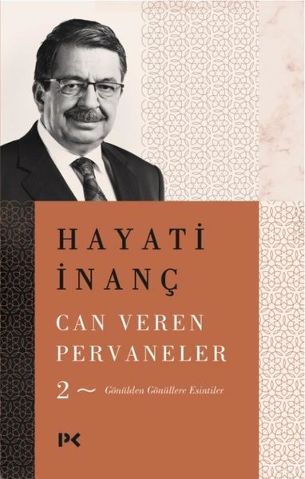

حوارات مع حياتي · الحلقة 3
هل مكان المرأة في البيت؟
تتناول الحلقة الأمومة والعمل والتوازن الأسري.
Hayati İnanç · 9:32 ·
النص بالتركية (لغة الحلقة الأصلية)
الوصف
Kadın hem iş hayatında var olmak hem de ailesini bir arada tutmak istediğinde sağlıklı denge nasıl kurulabilir? Annelik ile kariyer gerçekten birbirine rakip iki alan mıdır? Modern hayatın aile düzenine getirdiği değişiklikler kadınları ve çocukları nasıl etkiliyor?
Hayati İnanç, Hayati Sohbetler programının bu bölümünde günümüz kadınlarının karşı karşıya kaldığı sorumlulukları, anneliğin değerini ve aile hayatındaki değişimi kendi bakış açısından değerlendiriyor.
Program, kadınların hem iş hayatında aktif olmak hem de evdeki huzuru korumak istemesinin oluşturduğu ikili yük üzerine bir soruyla başlıyor.
Hayati İnanç, verdiği cevapta anneliği hayatın en ağır ve en kıymetli vazifelerinden biri olarak gördüğünü ifade ediyor:
“Annelik çok zor, çok kıymetli bir iştir.”
Annelikte mesai kavramının bulunmadığını, bunun “7 gün 24 saat 365 gün” devam eden ve çoğu zaman karşılık beklenmeden sürdürülen bir fedakârlık olduğunu anlatıyor.
Sohbetin devamında modern hayatın kadınlara yüklediği kariyer beklentileri ele alınıyor. Hayati İnanç, annelik ile iş hayatını aynı anda sürdürmeye çalışmanın kadın üzerinde fiziksel ve ruhsal bir yük oluşturabileceği görüşünü savunuyor.
Çocuğun okuldan sonra boş bir eve dönmesi ile annesinin veya bir aile büyüğünün bulunduğu eve dönmesi arasında fark olduğunu söyleyen İnanç, aile büyüklerinin çocuk yetiştirmedeki rolüne de değiniyor.
Programın orta bölümünde, iki ayrı hedef arasında kalan insanı anlatmak için eski bir beyitten ve havan metaforundan yararlanıyor. İki farklı odağa aynı anda yönelmeye çalışan kişinin kendi içinde yorulabileceğini ifade ediyor.
Hayati İnanç ayrıca eski dönemlerdeki aile hayatına dair hatıralarını anlatıyor ve kendi çocukluğunda gördüğü kadınlarla günümüz kadınları arasında karşılaştırmalar yapıyor.
Bölümün son kısmında ise kadın ve erkeğin aile içindeki rollerine ilişkin geleneksel yaklaşımını açık biçimde dile getiriyor. “Kadının yeri ev” ifadesini kullanan İnanç, bunun kendi hayat tecrübesi ve aile anlayışı çerçevesindeki görüşü olduğunu anlatıyor.
Sohbet; kadın, erkek, çocuk ve ailenin kendi sorumluluklarını yerine getirmesi hâlinde daha sağlıklı bir denge kurulabileceği düşüncesiyle tamamlanıyor.
Hayati Sohbetler, Hayati İnanç’ın anlatımıyla Seyf TV’de.
00:00 Giriş
00:18 Günümüz Kadınlarının Yaşadığı İkilem
00:48 Kadın İş Hayatı ile Aileyi Nasıl Dengeler?
00:57 Hayati İnanç’ın Annelik Üzerine Görüşleri
01:12 “Annelik Çok Zor ve Kıymetli Bir İş”
01:47 Fedakârlığı Anneden Öğrenmek
02:16 Kariyer ve Aile Tartışması
02:43 Kadının İki Ayrı Sorumluluk Arasında Kalması
03:13 Çocuk Eve Döndüğünde Kimi Buluyor?
03:45 Büyükanne ve Aile Büyüklerinin Rolü
04:04 Kreş ve Huzurevi Üzerine Dikkat Çeken Sözler
04:19 Aile Müessesesi Neden Zorlanıyor?
04:46 “Evin Sarayında Kraliçeyken…”
05:11 İki Hedef Arasında Kalmak
05:39 Havan Benzetmesi
06:10 Eski Zaman Kadınları
06:51 “Onlar Gerçekten Mutluydular”
07:22 Modern Kadın Üzerine Hayati İnanç’ın Yorumu
07:45 Meslek Seçimi ve Aile Dengesi
08:10 “Bu Bir Beka Sorunudur”
08:28 “Kadının Yeri Ev”
08:52 Kadın ve Erkek Rollerine Dair Görüşleri
09:11 Ailede Denge ve Mutluluk
09:18 Kapanış

كتب المتحدث


Niye Geldik Cihane?
شراء

Can Veren Pervaneler -1
شراء

Can Veren Pervaneler -2
شراء
من البرنامج نفسه

حوارات مع حياتي
لماذا نستسلم بعد إخفاق واحد؟
Hayati İnanç 15:43

حوارات مع حياتي
الجاهل يعرف كل شيء! المعرفة والنجاح الحقيقي في عصر الإنترنت
Hayati İnanç 14:31

حوارات مع حياتي
أكبر خطأ ينهي الحياة الزوجية
Hayati İnanç 21:50

حوارات مع حياتي
لماذا يعاني الشباب كل هذه الوحدة؟
Hayati İnanç 18:51

حوارات مع حياتي
لدينا كل شيء، فلماذا لا نشعر بالسعادة؟
Hayati İnanç 16:18

حوارات مع حياتي
هل من الرحمة أن نعطي الطفل كل ما يريد؟
Hayati İnanç 16:02

حوارات مع حياتي
يكفي صديق صادق واحد
Hayati İnanç 15:20